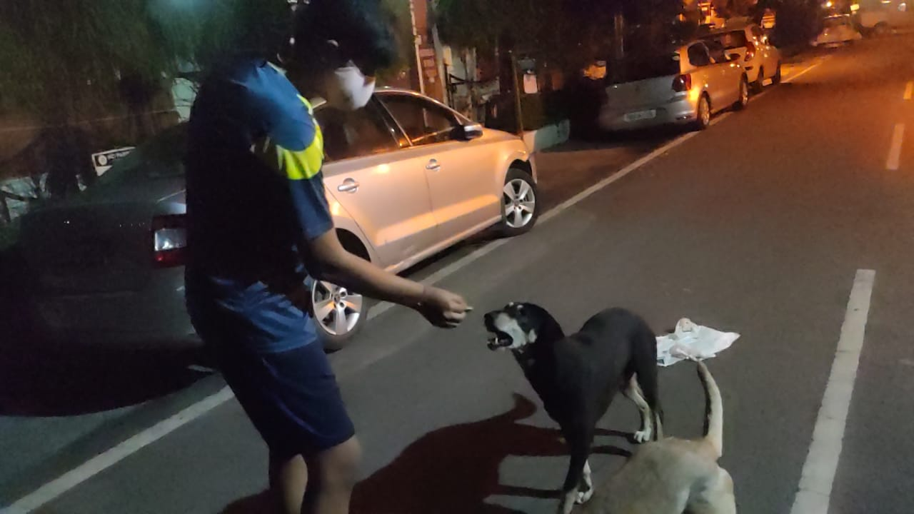
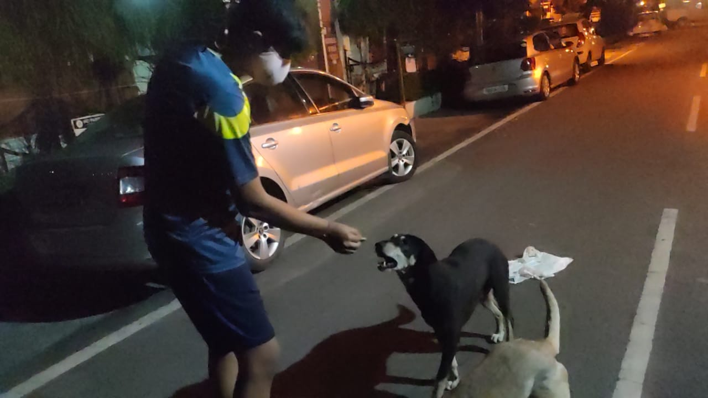

The coronavirus lockdown has not only forced the entire world indoors, but has out the four-legged strays in extreme distress as lack of food and water has impacted their lives gravelly. Millions of Indian street animals including- Dogs, Cats, Monkeys, Cows are going hungry amid the world's strictest lockdown. People who feed stray animals are deemed essential during this tough period. Miss. Ekawali Singh, the Founder and Director of SFC Foundations has launched a campaign, Feeding Paws, with an unique plot of adopting a stray animal and feeding it everyday like one's own pet. The story started on March 2020 when Miss Ekawali, once heard a cat crying in her neighbour, from that very moment, without knowing cat's medical condition, she and her family determined to feed her every day. Soon the family got to know that the cat has given birth to babies. The family was successful in saving the mother cat and kittens from starvation. Now, every day the cat would sit around her bowl waiting for her to come and feed her. So, if she can. Why not the whole world? Aiming this, SFC Foundations has launched its, Feeding Paws, under its project Vatavaran, to feed the hungry souls. Under this, one just need to adopt a pet and feed it with some chappatis or with milk and bread. (Adoption here means that one has to feed and look after a pet everyday). Animals teach us a great deal of things however none more significant than to cherish unequivocally. Hence, from that day to till now, our team has been working tirelessly across Chandigarh, Mohali, Panchkula, Zirkpur, Delhi, Mumbai and Jalandhar to feed these hungry souls as we believe in being the hands that feed is better than the lips that pray. Let's take motivation from this campaign and keep this movement going as these creatures are speechless and powerless, but it's our duty to take care of them and help them in any way we can. Sometimes the difference between life and death is YOU. So, ADOPT, FEED, FOSTER,CARE, DONATE, VOLUNTEER and RESCUE.

 


Paws Fed till now 🐾